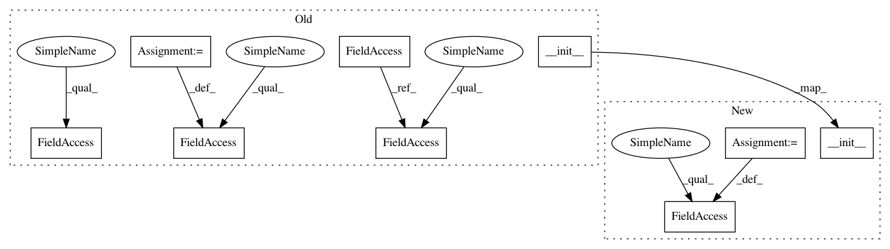

cf72dcaef367bf5625aa3a83a8bce8bbe823d892,examples/experimental/next-frame.py,VideoFrameSampler,__init__,#VideoFrameSampler#Any#Any#,628
Before Change
class VideoFrameSampler(BaseSampler):
def __init__(self, gan, samples_per_row=8):
sess = gan.session
self.x = gan.session.run(gan.preview)
print("__________", np.shape(self.x),"---oo")
frames = np.shape(self.x)[1]//height
self.frames=frames
self.x = np.split(self.x, frames, axis=1)
self.i = 0
BaseSampler.__init__(self, gan, samples_per_row)
def _sample(self):
gan = self.gan
z_t = gan.uniform_distribution.sample
After Change
class VideoFrameSampler(BaseSampler):
def __init__(self, gan, samples_per_row=8):
BaseSampler.__init__(self, gan, samples_per_row)
self.EZ = self.gan.ez
self.EC = self.gan.ec
self.G = self.gan.generator
self.seed()
def seed(self):
In pattern: SUPERPATTERN
Frequency: 3
Non-data size: 9
Instances
Project Name: HyperGAN/HyperGAN
Commit Name: cf72dcaef367bf5625aa3a83a8bce8bbe823d892
Time: 2020-02-14
Author: martyn@255bits.com
File Name: examples/experimental/next-frame.py
Class Name: VideoFrameSampler
Method Name: __init__
Project Name: HyperGAN/HyperGAN
Commit Name: cf72dcaef367bf5625aa3a83a8bce8bbe823d892
Time: 2020-02-14
Author: martyn@255bits.com
File Name: examples/experimental/next-frame.py
Class Name: VideoFrameSampler
Method Name: __init__
Project Name: pantsbuild/pants
Commit Name: 3f5e994767718a930681d75bd59154525b02cd18
Time: 2014-01-19
Author: benjyw@gmail.com
File Name: src/python/twitter/pants/targets/python_binary.py
Class Name: PythonBinary
Method Name: __init__
Project Name: DexterInd/GoPiGo3
Commit Name: 2571030793b0686f22e333bb4375dcd04651066e
Time: 2017-08-09
Author: robert.lucian.chiriac@gmail.com
File Name: Software/Python/easygopigo3.py
Class Name: DHTSensor
Method Name: __init__